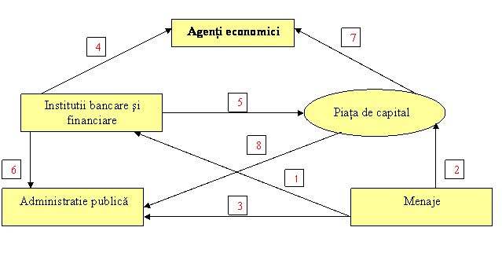

Lucrarea de faţă îşi propune să constituie un instrument e-learning util elevilor şi profesorilor de economie pentru predarea-învăţarea-evaluarea unităţii de învăţare BURSA DE VALORI BUCUREŞTI.
|
CAPITOLE: I. ELEMENTELE DEFINITORII ALE PIEŢEI DE CAPITAL II. BURSA DE VALORI. BURSA DE VALORI BUCUREŞTI III. SISTEMUL DE TRANZACŢIONARE AL BURSEI DE VALORI BUCUREŞTI |


1. 4. PIAŢA PRIMARĂ ŞI PIAŢA SECUNDARĂ
Piaţa primară reprezinta acel segment de piaţă pe care se emit şi se vând sau se distribuie valorile mobiliare către primii deţinători. Piaţa primară constituie un circuit de finanţare specializat. Această piaţă permite transformarea directă a economiilor in resurse pe termen lung. Pe piaţa primară se emit valori mobiliare ce confera anumite drepturi posesorilor lor, deci celor care au calitatea de furnizori de fonduri.
Participanţii pe piaţa primară, in cadrul carora se vând şi se cumpăra valori mobiliare nou-emise, sunt:
Pe piaţa primară se vând valori mobiliare emise de acele entităţi care au nevoie de resurse financiare şi se cumpără de către alte entităţi sau persoane fizice posesoare de economii pe termen mediu şi lung. Piaţa primară permite atragerea capitalurilor in scopul constituirii sau majorării capitalului social, precum şi apelarea la resurse împrumutate. Piaţa secundară asigură, prin intermrdiul bursei de valori mobiliare, atât buna funcţionare a pieţei primare, cât şi lichiditatea şi mobilitatea economiilor. Investitorii au posibilitatea de a negocia in orice moment acţiunile şi obligaţiunile deţinute in portofoliu sau pot cumpăra noi valori mobiliare.
Un rol important pe piaţa de capital revine intermediarilor de valori mobiliare, care :
Intermediarii se pot specializa in una sau mai multe activităţi.

SCHEMA 2: FLUXURI NETE DE CAPITAL
Noţiunea de flux net semnifică soldul tuturor mişcărilor de capital ce se derulează intre investitori şi emitenţi. Toate fluxurile nete pornesc de la agenţi ce dispun de capacitate de finanţare şi se indreapta către agenţi ce manifestă nevoie de finanţare. Cele mai reprezentative fluxuri sunt cele care pornesc de la menaje, de la instituţiile bancare şi financiare, ca şi cele iniţiate prin intermediul pieţei de capital. Fluxul notat cu 1 reprezintă capitaluri plasate de menaje (gospodăriile populaţiei) la instituţiile bancare şi financiare: depozite la vedere, plasamente pe termen efectuate la bănci, depozite la casele de economii, etc. Fluxul 2 semnifică subscrieri de valori mobiliare efectuate de menaje pe piaţa financiară , ca de exemplu cumpărari de acţiuni la bursă. Fluxul notat cu 3 reprezintă in principal subscrieri ale menajelor la emisiunile de stat (obligaţiuni de stat şi municipale, bonuri de tezaur). Fluxul 4 evidenţiază creditele acordate de instituţiile bancare agenţilor economici, iar fluxul 5 reflectă subscrierile de acţiuni şi obligaţiuni efectuate de către instituţiile bancare şi financiare pe piaţa de capital. Fluxul 6 reprezintă subscrierea de bonuri de tezaur efectuată de bănci şi alţi intermediari financiari, precum şi eventualele împrumuturi acordate colectivităţilor locale şi organismelor publice. Fluxul 7 are o importanţă deosebită cu privire la emisiunea de acţiuni şi obligaţiuni destinate intreprinderilor din sectorul public şi privat. Fluxul 8 reprezinta finanţarea adminsitraţiei publice, prin emisiunea de obligaţiuni pe piaţa de capital : împrumuturi de stat, împrumuturi contractate de colectivităţile locale şi de organismele publice. Piaţa secundară este o piaţă organizată, care aigură operatorilor următoarele avantaje :
Obiectivele pieţei secundare sunt :
Cele doua segmente de piaţă se intercondiţionează. Piaţa secundară nu poate exista fără piaţa primară, şi totodata, funcţionarea pieţei primare este influenţată de capacitatea pieţei secundare de a realiza transferabilitatea valorilor mobiliare şi transformarea lor in lichidităţi.
ÎN ACELAŞI CAPITOL : 1. 1. CONCEPTUL ŞI TRĂSĂTURILE PIEŢEI DE CAPITAL 1. 2. CEREREA ŞI OFERTA DE CAPITAL 1. 3. STRUCTURA PIEŢEI DE CAPITAL 1. 4. PIAŢA PRIMARĂ SI PIAŢA SECUNDARĂ
|